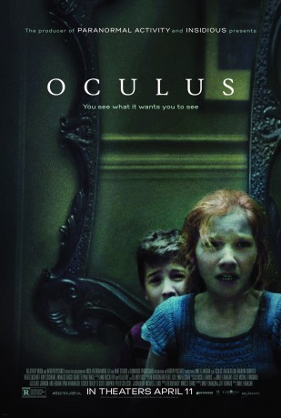
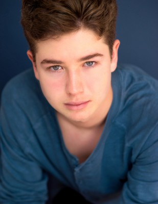
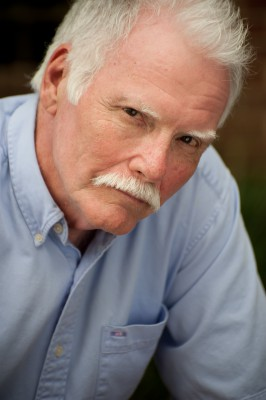

#7408 Oculus - Das Böse ist in dir
Alternativ: Oculus
 
 IMDB-Wertung: 6.5 / 10
IMDB-Wertung: 6.5 / 10  Metascore: 0
Metascore: 0 
The twenty-one year-old Timothy "Tim" Allen Russell is discharged from a mental institution by his psychiatric Dr. Shawn Graham completely healed from a childhood trauma where his father purportedly tortured and killed his mother before being killed himself by Tim. His sister Kaylie welcomes him in the parking area and brings him home. Then she tells that they need to destroy an ancient mirror that she has found through working at an auction house. She then steals the mirror and the reluctant Tim follows his sister and has fragmented recollections from their childhood, going back to when his father Alan buys a mirror for the home office of their new family home. Kaylie and Tim see a woman with their father in his office and the behaviors of Alan and Marie change, ending in a family tragedy. Kaylie blames the mirror and now she wants to destroy it with Tim. Will they succeed?
Jahr: 2013
Dauer: 103 Minuten
FSK: 16
Land: USA Studio: Relativity MediaTonspuren: DTS - ,
Untertitel:
Auflösung: 1080p (1920x800) Größe: 5079 MB
Genre: Horror, Mystery
Regisseur: Mike Flanagan
Drehbuch: Mike Flanagan
Soundtrack:
Darsteller:
 Karen Gillan als Kaylie Russell
Karen Gillan als Kaylie Russell- Brenton Thwaites als Tim Russell
 Katee Sackhoff als Marie Russell
Katee Sackhoff als Marie Russell Rory Cochrane als Alan Russell
Rory Cochrane als Alan Russell Annalise Basso als Young Kaylie
Annalise Basso als Young Kaylie-  Garrett Ryan als Young Tim
- James Lafferty als Michael Dumont
 Miguel Sandoval als Dr. Shawn Graham
Miguel Sandoval als Dr. Shawn Graham- Kate Siegel als Marisol Chavez
- Justin Gordon als Mark, Supervisor
- Catherine Parker als Phone Store Clerk
- Bob Gebert als Neighbor
- Brett Luciana Murray als Officer 1
- Courtney Bell als Auctioneer
- Elisa Victoria als Skype Worker
- Dave Levine als Robert Clancy
- Allison Boyd als Beatrice O'Connor
- Skye L. Johnson als Mary O'Connor
-  Bennett Wayne Dean Sr. als Auction Attendee, Restaurant Patron , uncredited
- Ginger McNamara als Dinner Guest , uncredited
- Jack Teague als Psychiatric Board Member , uncredited
- Scott Graham als Warren
- Michael J. Fourticq als St. Aidan Security Guard
- Zak Jeffries als Officer 2
- Stephanie Minter als Virginia Lasser
- Alexandra Beer als Marcia Wicker
- James Flanagan als Tobin Capp
- Marc Evans als Oliver Jeffries
- Toni White als Alice Carden
- Ashley Bonds als A. Thompson , uncredited
- Doris Dean als Art Auction Attendee , uncredited
- Bruce Larsen als Ghost , uncredited
- Katie Parker als Phone Store Cleerk , uncredited
- Amanda Spears als Art Auction Buyer , uncredited
Datei: X:\2013(N-Z)\Oculus - Das Böse ist in dir (2013, FSK16, 1920x800).mkv seit 08.11.2017
Festplatte: HD 2013(I-Z)-2014(A-Z)
 Es gibt insgesamt 133 Filme in der Gruppe '2013(N-Z)'
Es gibt insgesamt 133 Filme in der Gruppe '2013(N-Z)'